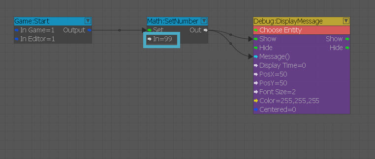
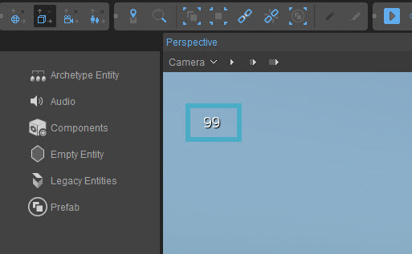
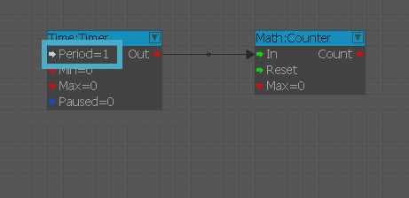
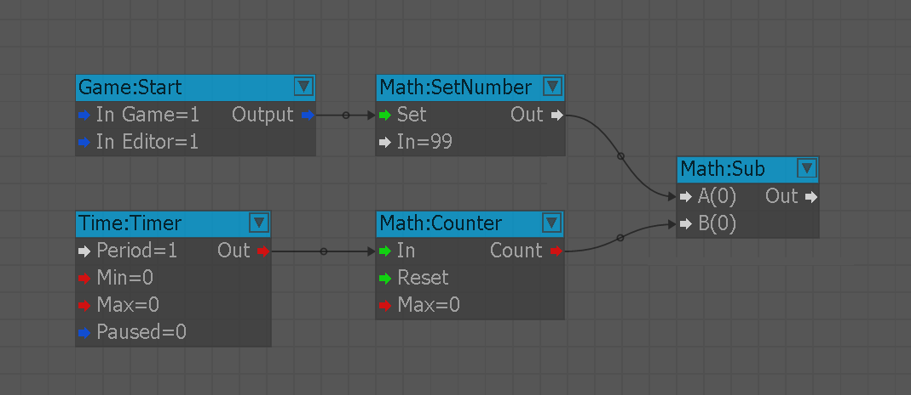
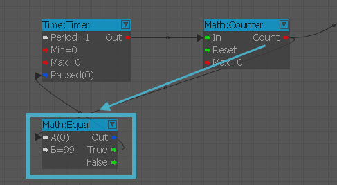
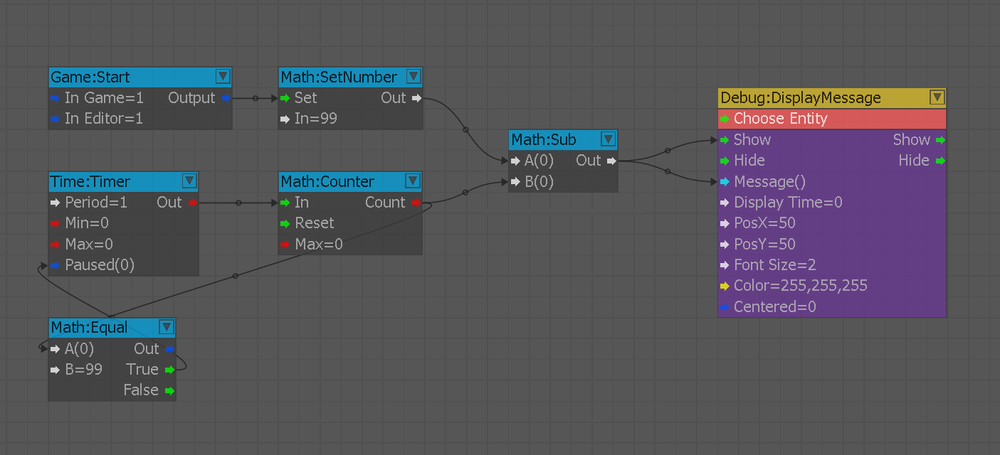

В этом примере мы рассмотрим, как создать таймер обратного отсчета, чтобы ограничить раунд и сообщить игроку оставшееся время. Идея проста для понимания: нам нужно начать с заданного числа, а затем каждую секунду вычитать одно значение. Нам придется управлять подсчетом, а также приостановкой уменьшения числа, когда оно достигает нулевого значения.
Как заставить часы тикать
Вам необходимо выполнить следующие шаги, чтобы протестировать анимацию в сцене:
- Добавить Математика:SetNumber узел и установив значение 99. Это будет длина нашего раунда.
- Добавить Игра:Начать узел в начале, а затем извлекаем числовое значение из SetNumber в Показать и Сообщение слоты Отладка: DisplayMessage узел.
- Перейти на свой уровень (Ctrl+Г) и проверьте, отображается ли значение в левом верхнем углу экрана.
- Теперь значение напечатано в 99 мы начнем добавлять обратный отсчет, сначала добавив Время: Таймер узел для обновления каждого кадра (1) и Математика:Счетчик узел, чтобы увеличить счетчик значения.
- Для того, чтобы подключить SetNumber и Математика:Счетчик нам нужно добавить Математика:Подробнее узел, а затем вычтите SetNumber из 99 в А слот и Математика:Счетчик вычитание в Б слот.
- Завершите проверку, чтобы увидеть, достиг ли счетчик 0, проверив Счетчик через Математика:Равно узел установлен в 99 и он подключается к Время: Таймер Пауза слот, когда счетчик 99 выводит правду.
- Последний шаг – просто подключение вывод из Математика:Подробнее узел в DisplayMessage узел в Показать и Сообщение слоты.
Шаг 1–2

Шаг 3

Шаг 4

Шаг 5

Шаг 6

Шаг 7
